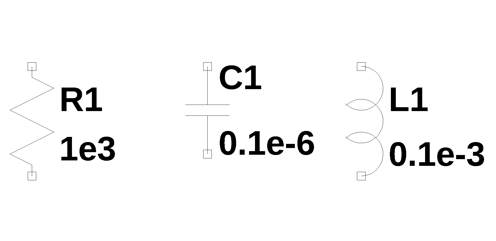
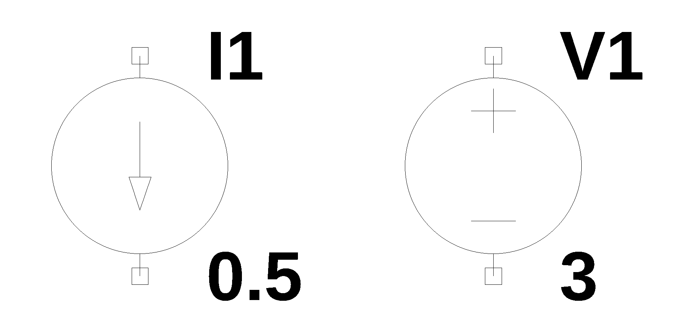
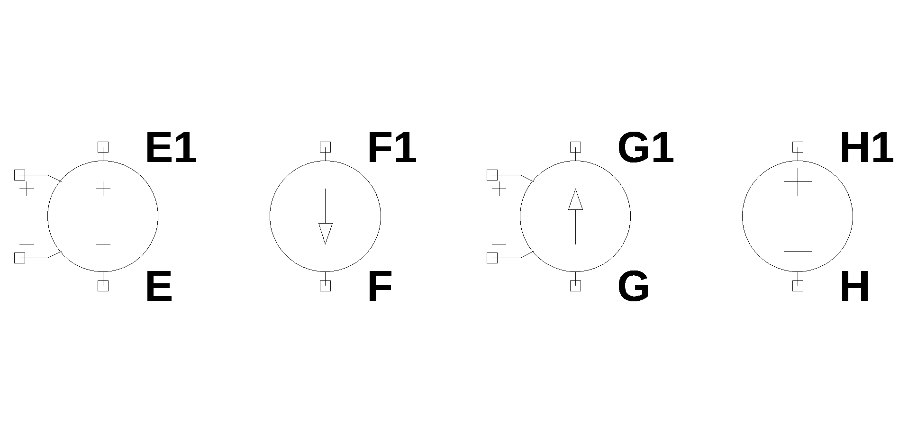
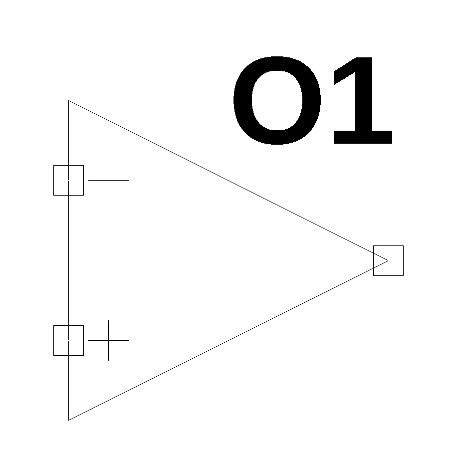
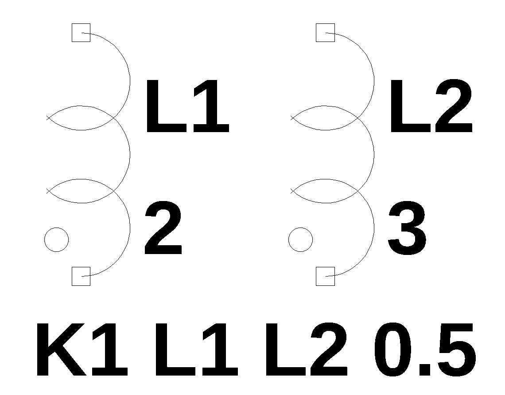

Appendix G — Quick Reference
This chapter is a quick reference to some basic information used throughout this book.
G.1 Schematic Symbols
The following symbols can be used in in LTSpice to draw schematics that will produce SPICE netlists for the MNA Python code.
| Schematic Symbol | Example lines in the netlist |
|---|---|
|  | Passive components R1 1 2 1e3 C1 1 2 0.1e-6 L1 1 2 0.1e-3 |
|  | Independent sources I1 1 2 0.5 V1 3 4 3 |
|  | Dependent sources VCVS: E1 1 2 3 4 E CCCS: F1 5 6 V1 F VCCS: G1 7 8 9 10 G CCVS: H1 11 12 V1 H \(V_1\) defines the branch controlling the current |
|  | Op Amp O1 1 2 3 |
|  | Coupled inductors L1 1 2 2 L2 3 4 3 K1 L1 L2 0.5 |
G.2 SI Units
Voltage, also known as (electrical) potential difference is the difference in electric potential between two points. In the context of circuit analysis, the fundamental quantities are current, voltage and resistance.
| Quantity | Unit (SI) | Symbol | Defines/Measures |
|---|---|---|---|
| Electric Current | Ampere | A (or \(I\)) | The rate of flow of electric charge. |
| Electric Potential Difference (Voltage) | Volt | V (or \(E\) or \(U\)) | The electrical “pressure” that drives the current. |
| Electrical Resistance | Ohm | \(\Omega\) (Omega) | The opposition a material offers to the flow of electric current. |
These three units are intrinsically linked by Ohm’s Law: \(V = I \times R\). Beyond the core three, several other quantities are crucial in circuit analysis:
| Quantity | Unit (SI) | Symbol | Relationship/Formula | Measures |
|---|---|---|---|---|
| Electric Power | Watt | W | \(P = V \times I\) | The rate at which electrical energy is transferred or converted. |
| Capacitance | Farad | F | \(C = Q / V\) | A component’s ability to store an electric charge. |
| Inductance | Henry | H | \(V = L \frac{di}{dt}\) | A conductor’s ability to oppose a change in current. |
| Frequency | Hertz | Hz | \(Hz = s^{-1}\) | The number of cycles (e.g., of an AC waveform) per second. |
| Electrical Energy | Joule (or kWH for practical use) | J (or kWh) | \(E = P \times t\) | The work done by electrical forces. |
G.3 Prefixes to Units
Electrical quantities often cover an enormous range from very small to very large. SI prefixes are used to simplify notation:
| Prefix | Symbol | Power of 10 | Example |
|---|---|---|---|
| Tera | T | \(10^{12}\) | 1 TW (1 trillion Watts) |
| Giga | G | \(10^9\) | 1 GHz (1 billion Hertz) |
| Mega | M | \(10^6\) | 1 M\(\Omega\) (1 million Ohms) |
| kilo | k | \(10^3\) | 1 kV (1 thousand Volts) |
| milli | m | \(10^{-3}\) | 1 mA (one-thousandth of an Ampere) |
| micro | \(\mu\) | \(10^{-6}\) | 1 \(\mu\)F (one-millionth of a Farad) |
| nano | n | \(10^{-9}\) | 1 nF (one-billionth of a Farad) |
| pico | p | \(10^{-12}\) | 1 pF (one-trillionth of a Farad) |
| femto | f | \(10^{-15}\) | 1 fs (one-quadrillionth of a second) |
G.4 Variable names
I’ve tried to be consistent with the use of variable names throughout the Jupyter notebooks. Resistors, capacitors and inductors use R, L and C as reference designators. The names chosen for the other variables are listed in Table G.2.
This table needs an update.
| Variable name | definition |
|---|---|
| NE_sym | Network equations, symbolic |
| NE | Network equations with component values |
| NE_dc | Network equations with \(s=0\) |
| NE_w1 | Network equations with \(s=j \omega\) and \(\omega\) equal to a numeric value |
| U_sym | The solution to the symbolic network equations |
| U | The solution to network equations with component values |
| U_ac | The solution to network equations at some frequency |
| H_sym | system transfer function, symbolic |
| H | System transfer function with component values |
| \(V_1, V_2,\) … | Capital letter V for independent voltage sources |
| \(v_1, v_2,\) … | Small letter v for the node voltages |
| \(I_1, I_2,\) … | Capital letter I for independent current sources |
| \(R_1, R_2,\) … | Capital letter R for resistors |
| \(L_1, L_2,\) … | Capital letter L for inductors |
| \(C_1, C_2,\) … | Capital letter C for capacitors |
| \(E_1, E_2,\) … | Voltage controlled voltage source (VCVS) |
| \(F_1, F_2,\) … | Current controlled current source (CCCS) |
| \(G_1, G_2,\) … | Voltage controlled current source (VCCS) |
| \(H_1, H_2,\) … | Current controlled voltage source (CCVS) |
| \(K_1, K_2,\) … | Inductor coupling coefficients |
| \(M_1, M_2,\) … | Mutual inductance |
| \(O_1, O_2,\) … | Op Amp components |
| A | Connectivity matrix |
| X | Unknown voltages and currents vector |
| Z | Known voltages and currents vector |
G.5 Common Laplace Transform Pairs
The Laplace transform is a powerful integral transform used to switch a function from the time domain (t) to the complex frequency domain (s). This is particularly useful for solving linear differential equations by turning them into algebraic equations.
The general definition of the Laplace transform is:
\[F(s)=\mathcal{L}\{f(t)\} \int_{0^{-}}^{\infty} e^{-st} dt\]
The table below lists the most frequently used transforms for engineering and physics. Note that u(t) represents the unit step function, and all functions are assumed to be zero for t < 0.
| Function Name | f(t) | F(s) |
|---|---|---|
| Unit Impulse | \(\delta(t)\) | 1 |
| Unit Step | 1 or u(t) | \(\frac{1}{s}\) |
| Ramp | t | \(\frac{1}{s^2}\) |
| n-th Power | \(t^n\) | \(\frac{n!}{s^{n+1}}\) |
| Exponential Decay | \(e^{-at}\) | \(\frac{1}{s+a}\) |
| Sine Wave | \(\sin(\omega t)\) | \(\frac{\omega}{s^2 + \omega^2}\) |
| Cosine Wave | \(\cos(\omega t)\) | \(\frac{s}{s^2 + \omega^2}\) |
| Damped Sine | \(e^{-at}\sin(\omega t)\) | \(\frac{\omega}{(s+a)^2 + \omega^2}\) |
| Damped Cosine | \(e^{-at}\cos(\omega t)\) | \(\frac{s+a}{(s+a)^2 + \omega^2}\) |